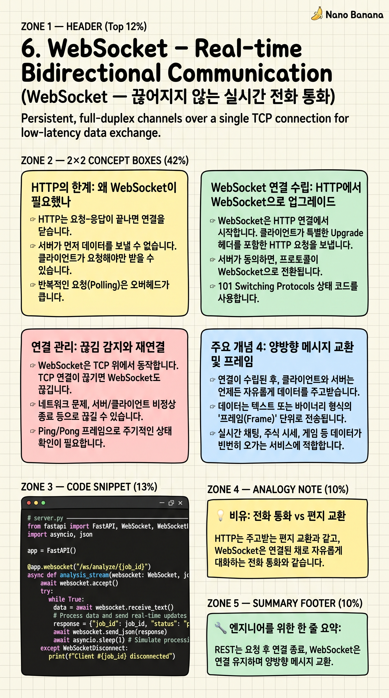

WebSocket – Real-time Bidirectional Communication

🎯 학습 목표
- HTTP polling과 WebSocket의 차이를 성능 관점에서 설명할 수 있다
- WebSocket 핸드셰이크(Upgrade 요청)가 어떻게 이루어지는지 이해한다
- FastAPI에서 WebSocket 엔드포인트를 직접 만들 수 있다
- AI 분석 결과를 스트리밍으로 전송하는 패턴을 이해한다
챕터 4에서 배운 HTTP REST는 요청-응답 후 연결을 끊습니다. AI가 비디오를 분석하는 데 30초가 걸린다면, 클라이언트는 30초를 어떻게 기다려야 할까요? 매초 '다 됐어?'라고 물어보면 서버에 부하가 생기고, 그냥 기다리면 사용자 경험이 나빠집니다.
WebSocket은 이 문제를 해결합니다. 한 번 연결을 맺으면 양쪽이 원할 때 자유롭게 메시지를 보낼 수 있습니다. 서버가 '지금 20% 완료', '워커 A 결과 나왔습니다' 같은 업데이트를 실시간으로 밀어줍니다(push).
챕터 1 다이어그램의 'WebSocket (스트리밍)'이 바로 이것입니다. 분석 결과가 나오는 대로 브라우저에 스트리밍하여 사용자가 3개 컬럼 결과를 실시간으로 볼 수 있게 합니다.
핵심 내용
HTTP의 한계: 왜 WebSocket이 필요했나
HTTP는 요청-응답이 끝나면 연결을 닫습니다. 서버가 먼저 데이터를 보낼 수 없습니다. 클라이언트가 요청해야만 서버가 응답합니다. 이를 '단방향(Half-duplex)' 통신이라고 합니다.
실시간 업데이트를 HTTP로 구현하려면 polling을 써야 합니다. 클라이언트가 매초 'GET /status'를 보내는 방식입니다. 결과가 30초 후에 나온다면 30번의 요청이 발생합니다. 각 요청마다 TCP 연결을 새로 맺고(또는 재사용), HTTP 헤더를 주고받는 오버헤드가 생깁니다.
Long Polling은 서버가 응답을 보내지 않고 연결을 유지하다가 데이터가 생기면 응답합니다. 개선이지만 여전히 매 응답마다 재연결해야 하는 비효율이 있습니다. WebSocket은 이 모든 문제를 해결합니다.
WebSocket 연결 수립: HTTP에서 WebSocket으로 업그레이드
WebSocket은 HTTP 연결에서 시작합니다. 클라이언트가 특별한 Upgrade 헤더를 포함한 HTTP 요청을 보냅니다: 'Upgrade: websocket', 'Connection: Upgrade'. 서버가 101 Switching Protocols로 응답하면 그 순간부터 같은 TCP 연결이 WebSocket 프로토콜로 전환됩니다.
연결 후에는 HTTP처럼 헤더 없이 가벼운 프레임(Frame) 형식으로 데이터를 교환합니다. 텍스트 프레임, 바이너리 프레임, 핑/퐁 프레임(연결 유지 확인) 등이 있습니다. 연결은 어느 쪽이든 Close 프레임을 보내 종료할 수 있습니다.
WebSocket URL은 ws:// 또는 wss://(TLS 암호화)를 사용합니다. HTTPS처럼 wss://가 보안 버전입니다. 포트는 HTTP와 동일한 80(ws) / 443(wss)을 사용하므로 방화벽 문제가 없습니다.
연결 관리: 끊김 감지와 재연결
WebSocket은 TCP 위에서 동작합니다. TCP 연결이 끊기면 WebSocket도 끊깁니다. 네트워크 불안정, 서버 재시작, 모바일에서 Wi-Fi↔LTE 전환 등으로 연결이 끊길 수 있습니다.
서버-클라이언트 둘 다 주기적으로 Ping 프레임을 보내 연결이 살아있는지 확인합니다(Heartbeat). 응답이 없으면 연결이 죽었다고 판단합니다. 클라이언트는 지수 백오프(1초→2초→4초→...)로 재연결을 시도합니다.
실제 프로덕션에서 WebSocket 서버 여러 대를 운영할 때, 한 클라이언트의 연결이 서버 A에 있고 다른 클라이언트가 서버 B에 있으면 서로 메시지를 보낼 수 없습니다. 이 문제를 해결하기 위해 Redis Pub/Sub 같은 메시지 브로커를 사이에 둡니다.
💡 비유로 이해하기
HTTP REST는 편지 교환입니다. 편지를 쓰고(요청), 상대방이 답장을 쓰고(응답), 그 이후 연결은 없습니다. 다시 무언가를 묻고 싶으면 새 편지를 보내야 합니다. 빠른 대화에는 적합하지 않습니다.
WebSocket은 전화 통화입니다. 한 번 전화가 연결되면 양쪽이 언제든 말할 수 있습니다. 상대방이 먼저 '방금 분석 결과 나왔어!'라고 알려줄 수도 있습니다(서버 push). 통화가 끝날 때까지 연결이 유지됩니다.
AI 비디오 분석 시스템을 생각해보세요. WebSocket 없이 REST만 쓰면: '분석 됐어?' → '아직' → '분석 됐어?' → '아직' → '분석 됐어?' → '됐어!'처럼 클라이언트가 계속 물어봐야 합니다. WebSocket을 쓰면: 연결 유지 → 서버가 '20% 완료'... '50%'... '워커 A 결과: ...'를 자동으로 밀어줍니다.
💻 코드 예시
FastAPI로 WebSocket 서버를 만들고, AI 분석 진행 상황을 실시간으로 스트리밍합니다. 클라이언트는 websockets 라이브러리로 연결합니다. (pip install fastapi uvicorn websockets)
# server.py ─────────────────────────────────────────────────
from fastapi import FastAPI, WebSocket, WebSocketDisconnect
import asyncio, json
app = FastAPI()
@app.websocket("/ws/analyze/{job_id}")
async def analysis_stream(websocket: WebSocket, job_id: str):
await websocket.accept() # WebSocket 연결 수락 (101 Switching Protocols)
try:
# 클라이언트로부터 분석 요청 수신
data = await websocket.receive_json()
prompt = data.get("prompt", "비디오를 설명해주세요")
# 진행 상황을 실시간 스트리밍
stages = [
("processing", "ffmpeg로 프레임 추출 중..."),
("processing", "워커 A (27B 모델) 분석 중..."),
("processing", "워커 B (9B 모델) 분석 중..."),
("done", "분석 완료! 결과: 영상에는 고양이가 등장합니다."),
]
for status, message in stages:
await websocket.send_json({"status": status, "message": message})
await asyncio.sleep(1) # 실제로는 AI 처리 대기
except WebSocketDisconnect:
print(f"클라이언트 연결 끊김: job_id={job_id}")
# client.py ─────────────────────────────────────────────────
import asyncio, websockets, json
async def watch_analysis(job_id: str, prompt: str):
uri = f"ws://localhost:8000/ws/analyze/{job_id}"
async with websockets.connect(uri) as ws:
# 분석 요청 전송
await ws.send(json.dumps({"prompt": prompt}))
print(f"분석 요청 전송: {prompt}")
# 서버가 보내는 업데이트를 실시간 수신
async for raw_message in ws:
msg = json.loads(raw_message)
emoji = "✅" if msg["status"] == "done" else "⏳"
print(f" {emoji} {msg['message']}")
if msg["status"] == "done":
break
asyncio.run(watch_analysis("job-123", "이 영상에 무엇이 나오나요?"))
# uvicorn server:app 실행 후 위 클라이언트 코드 별도 실행서버의 @app.websocket 데코레이터가 WebSocket 엔드포인트를 선언합니다. await websocket.accept()로 연결을 수락(101 응답)합니다. receive_json()/send_json()으로 JSON 메시지를 주고받습니다. WebSocketDisconnect 예외를 잡아 클라이언트 연결 끊김을 처리합니다. 클라이언트에서 async for를 쓰면 서버가 보내는 메시지가 올 때마다 자동으로 실행됩니다.
🏭 현업에서의 평가
✅ 시니어가 보는 것
- HTTP polling vs WebSocket 트레이드오프를 구체적 수치로 설명
- 다중 서버 환경에서 WebSocket 세션 관리(Redis Pub/Sub) 이해
- 연결 끊김 감지(heartbeat)와 재연결 로직 구현 경험
⚠️ 레드 플래그
- 모든 실시간 기능에 무조건 WebSocket 사용 (SSE가 적합한 단방향 스트리밍에도)
- WebSocketDisconnect 예외 처리 없이 서버 메모리에 연결 객체 쌓이는 패턴
🎤 예상 인터뷰 질문
- WebSocket 대신 Server-Sent Events(SSE)를 선택하는 경우는 언제인가요?
- WebSocket 서버를 여러 대 운영할 때 발생하는 문제와 해결책은 무엇인가요?
✨ 핵심 요약
HTTP = 편지, WebSocket = 전화
REST는 요청 후 연결 종료, WebSocket은 연결 유지하며 양방향 메시지 교환
Upgrade 헤더
HTTP 연결에서 WebSocket으로 전환하는 101 Switching Protocols 핸드셰이크
서버 Push 가능
WebSocket의 핵심 장점: 서버가 먼저 클라이언트에게 데이터를 보낼 수 있음
ws:// / wss://
WebSocket 전용 URL 스킴. wss://가 TLS 암호화 보안 버전
TCP 위에서 동작
WebSocket = TCP + 경량 프레임 포맷 → 단 1바이트도 손실 없이 전달
Heartbeat
Ping/Pong 프레임으로 연결 살아있는지 주기적 확인 필수
AI 스트리밍
ChatGPT 타이핑 효과, AI 분석 진행률 스트리밍 모두 WebSocket/SSE 기반